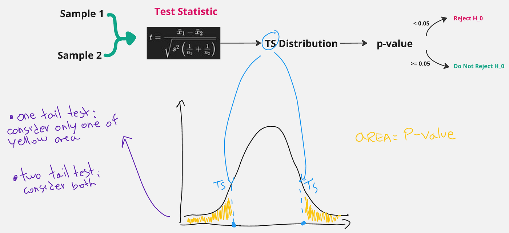

MLOps — Data Validation with PyTest
Run deterministic and non-deterministic tests to validate your dataset.
January 4, 2025 · MLOps, PyTest
Introduction
In an MLOps pipeline where we try to automate as many steps as possible, keeping in mind the goal of minimizing the number of errors that direct intervention by a programmer might cause, it is also important to take care of dataset validation. I think everyone is familiar with the #1 rule of machine learning: garbage-in, garbage-out. It doesn’t matter how sophisticated are the models we develop, if the dataset is not well taken care of we will, with a high probability, get bad results.
In this article, we’ll see how to perform automatic validations on the dataset using PyTest.
I run the scripts of this article using Deepnote: a cloud-based notebook that’s great for collaborative data science projects and prototyping.
About ETL
People approaching machine learning for the first time often have to deal with solving challenges of the type you find on Kaggle. In these challenges, we almost always have a static dataset, which never changes over time. This, however, is not entirely true in the real world.
When working on a real machine learning product, data may change continuously. The resulting data are obtained through preliminary steps of data extraction, data transformation and data loading.
These three phases are usually summarized by the acronym ETL. In simple words imagine that you need to perform data collection to have a good volume of data to conduct your model training. You will have to extract the data from somewhere for example by scraping, or analyzing what open-source data can do for you (extraction).
Data might come in different formats, maybe we have collected some CSV files, a JSON and some txt files as well. So we have to deal with transforming this data to have uniformity.
Finally, we need to make this data usable in an easy way for the data scientists working on it. So we can upload it to a system that makes it easy to download (eg. Hugging Face, AWS).
In this article, you can read about some of the ETL best practices.
What can go wrong?
Now that we know how data are collected, let’s deal with understanding how and why a data scientist needs to deal with data validation. There are several things that can go wrong in our dataset.
- The world around us is dynamic and changing, so the distribution of data also changes. Think of a model that makes predictions about the price of some t-shirts. XXL sizes were predicted with a very low price because no one was buying them. But we know that as generations go by, people get taller and taller, so in the future, it may be necessary to re-train the model that will have to give greater importance to large sizes.
- Changes were made in the source data that were not reported to us. The team in charge of the ETL pipeline changed the data regarding the movie rating system, going from a system ranging from one to five stars to one that goes up to ten stars.
- A bug in the data ingestion, during the ETL. Maybe there was a metric change and we went from data expressed in cm to data expressed in km.
Data validation can be done before or after data segregation (splitting data into train and test). It is not clear where it is best to do it there are pros and cons for both approaches.
Intro to PyTest
PyTest is a Python library that is widely used to run different kinds of tests. Usually, we create a folder called tests in our codebase and within it, we collect all the files for the several tests we want to run. Each file will be named as test_xx.py. So we can have for example tets_data.py or test_model.py
tests
|--test_data.py
|--test_model.pyThe main Python command for performing tests is assert. This command makes sure that a certain condition is met otherwise an error is returned. The error can be defined in a string after the condition. Let’s look at an example.
PyTest will launch all test functions it detects within a file, and make sure that all assertions return True. If they do not, the terminal will display which tests failed. An example of a test function is as follows.
The first problem arises here. In the previous function, what is the value of the given input? How do we specify such a variable during the testing phase? We get help from the fixtures!
Fixtures in PyTest
In many cases (as in the one above) tests need input data (such as data) on which to make assertions. This input data can be provided using PyTest’s fixtures. With fixtures, we can declare variables that will be used within the tests without having to be assigned anymore. The function that defines a fixture however must have the same name, as the input variable of the test functions. Let’s look at an example.
You see in the code block above, that we implement a fixture called data (named after the function) that returns as output a dataframe called df.
So in the test test_data_lenght, the input data will take the value of the fixture, so it will match the df dataframe.
For a fixture we can specify its scope, so we can decide when the fixture will be destroyed. For example, if the scope is “session” the same fixture will live for the whole session, in this way a first test can change the data value, which it will then forward to the second test.
If we use the scope “function” instead, each test will use a fresh and unchanged copy of the fixture as input.
In the PyTest docs, you can read about all different kinds of scopes.
Fixtures are created when first requested by a test and are destroyed based on their scope:
function: the default scope, the fixture is destroyed at the end of the test.class: the fixture is destroyed during teardown of the last test in the class.module: the fixture is destroyed during teardown of the last test in the module.package: the fixture is destroyed during teardown of the last test in the package.session: the fixture is destroyed at the end of the test session.
Writing tests for machine learning datasets can be more complex than writing tests for traditional software engineering. In traditional software, we usually have for each function an expected output, so if the test returns something different from what we expected evidently there is an error.
In a dataset, on the other hand, it is more complex because we are not sure what to expect. For example, we suppose that the average of the feature “height” in a dataset is 1.70cm. The test shows that the average is “1.75” instead. What should we do? Is there an error? Or did we add a few more samples in the data of really tall people that raised the average?
So let us begin by looking at some simple deterministic tests that we can do on a dataset and then address non-deterministic ones as well.
Deterministic Tests
Writing deterministic tests is quite simple. What is deterministic about a dataset? For example, the number of columns that must be precisely X, or the number of rows that must be ≥ N otherwise we do not have enough data.
For categorical variables, we can check that the values are within a range. For example, if the feature “colour” can only take values in [red, green, blue] we can do this check.
Let’s look at an example file for these types of tests.
In this code, we find the following functions:
- data: fixture in which we expose the variable containing the dataframe
- test_column_presence_and_type: in this function, we make sure that the four columns [age, salary, name, genre] are present in the dataset and are of the correct type.
- test_class_names: this function makes sure that the genre values are among the known ones. It ensures that we do not find values that we do not expect.
- test_column_ranges: here we make sure that numeric variables are in a certain range. For example, age can never be a negative number!
Non Deterministic Tests
What we’d like to do in non-deterministic tests is to measure values considering uncertainty. Whenever we talk about uncertainty, probability and statistics come into play, and we will make use of them here as well.
A common practice is to evaluate the values of a dataset we are currently working on by comparing it with previous versions.
Some examples of checks we can do on a dataset are:
- check the presence of outliers
- check the distribution of values of one or more columns
- check whether there is a correlation between one or more columns, or between all columns and the target column (to be predicted)
- check the mean and std deviation of the various columns
As already mentioned, in non-deterministic testing, statistics are used, usually past data are taken as examples and compared with current data. It is therefore important to understand how hypothesis testing works and to understand how we can use it to make these comparisons.
We will briefly look at the basics of hypothesis testing in this article. If you want to go deeper, I suggest you watch this video about it:
When we deal with hypothesis testing, we always test a hypothesis called a null hypothesis against an alternative hypothesis.
- Null Hypothesis (H_0): is the assumption widely accepted by the scientific community. In our case, it could be an assumption made about the data.
- Alternative Hypothesis (H_a): this is an alternative hypothesis that I want to get accepted, which is in disagreement with the Null Hypothesis. Obviously to get my new hypothesis accepted I have to bring in data that confirm my hypothesis so that it is easier to convince everyone that my new hypothesis is correct.
A classic example is:
- Null Hypothesis (H_0): two samples come from populations that have a normal distribution with the same mean.
- Alternative Hypothesis: two samples come from populations that have a normal distribution with different mean.
Depending on the assumptions made, there are various statistical tests that can be used. Each statistical test is related to assumptions. So it is very important to choose the correct test. Here is an article about choosing the right statistical test.
In our example, we will use a t-test.
What we need to do is, starting from the samples, calculate a value called Test Statistics using a known formula. From the Test Statistics, we calculate another value called p-value (which corresponds to the area under a curve, we’ll see later). If the p-value is greater than an a priori chosen threshold (alpha) we cannot reject the null hypothesis, which continues to remain the true one. If it is less instead we can reject it, and affirm the new (alternative) hypothesis.
Of course, the degree of confidence in this rejection is given by the threshold we choose a priori. Common threshold values are 0.1, 0.5, and 0.001. The smaller it is, the more confident we are.

If it’s still not completely clear don’t worry, this whole explanation translates to Python in just a few lines of code! Scipy functions for t-test directly return the test-statistic value and the p-value. We only need to choose the alpha and make our decision.
In machine learning, it would be optimal to have a reference dataset and compare it with a newly obtained dataset so that we understand if the distribution of data has remained the same. Unfortunately, we often do not have that many datasets available, so what is usually done is to compare the test dataset with the training dataset.
One test that is often done is to figure out whether two features come from the same probability distribution, of course, we want the column we use in the test dataset to have the same distribution as the training one, otherwise, the pattern the model learned would be completely useless in testing!
To do this we can use a test called the Kolmogorov-Smirnov test. This test is also provided by the scipy library.
At this point you should be able to implement such a check with PyTest.
Actually when we run multiple hypothesis testing on different columns of the dataset we have to make a correction to the chosen alpha called Bonferroni correction, which we will see in the next article.
Conclusions
In this article, we talked about what the main components of a data ingestion pipeline are, called ETL, which stands for extraction, transformation, and load. We also talked about the importance for a data scientist to validate the data he or she is working on. Validation can be done with deterministic tests where we know a priori the expected output, and non-deterministic tests where we can assert our assumptions with statistical tests. These tests were all launched with PyTets, which is a very important tool for all data scientists, and it helps us keep our code clean and minimizes errors in our code.
If you are interested in this article follow me on Medium! 😁
💼 Linkedin ️| 🐦 X (Twitter) | 💻 Website
This article has been published on Towards Data Science